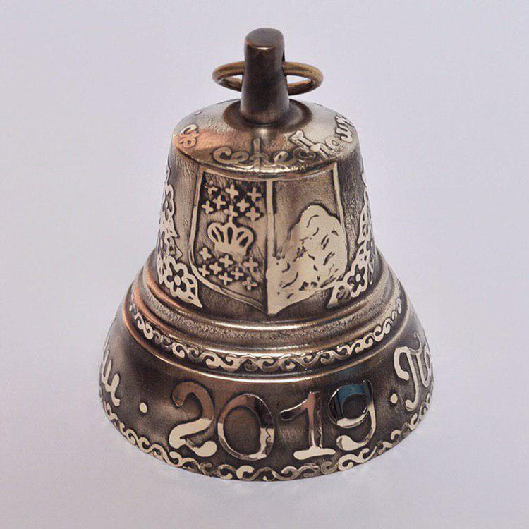

Мастерская вашего подарка · ПрототипСлова, которые
Слова, которые
останутся на память
Посмотрите, как ваша надпись может выглядеть на юбке колокольчика. Герб и орнамент остаются на своих местах.
Валдайский колокольчик · С гербом3D-эскиз
Подготавливаем колокольчик…
Что напишем?
Это эскиз оформления, а не точная копия изделия. Мастер наносит рисунки и надписи вручную — без трафаретов, поэтому готовая работа будет отличаться от визуализации.

Основа эскиза
Настоящий колокольчик мастерской
Форму восстановили приблизительно по этому снимку. Фрагмент герба взят с фотографии; рисунок на обратной стороне и мелкие детали пока переданы условно. Для точной модели понадобятся размеры и дополнительные ракурсы.
Рассмотреть оригинал ↗